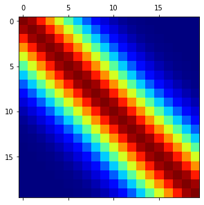

#%matplotlib notebook
https://kapernikov.com/ipywidgets-with-matplotlib/
from ipywidgets import widgets
import numpy as np
import matplotlib.pyplot as plt
Exponentiated quadratic (RBF) Kernel¶
def compute_gram(l = 4,s = 1):
"""
l is a parameter that regulates how fast neighbouring
points will become uncorrelated (smaller l, faster they become uncorrelated)
we can add an scaling factor s to regulate between which values it will vary
"""
k = lambda x, xp : s * np.exp(-((x-xp)**2)/(2*(l**2)))
k = np.vectorize(k)
N=20
x = np.linspace(0, 1, N)
G = k(np.tile(np.arange(N),(N,1)),np.tile(np.arange(N),(N,1)).transpose())
return G
output = widgets.Output()
with output:
fig, ax = plt.subplots(constrained_layout=True, figsize=(6, 4))
ker = ax.matshow(compute_gram(l = 4,s = 1),cmap=plt.cm.jet)

# create some control elements
length_slider = widgets.FloatSlider(value=1, min=0.1, max=10, step=0.1, description='length',continuous_update=False)
sigma_slider = widgets.FloatSlider(value=1, min=0, max=10, step=0.1, description='sigma',continuous_update=False)
kernel_dropdown = widgets.Dropdown(options=['1', 'exp_q', '3'],value='exp_q', description='Kernel:', disabled=False)
# callback functions
@output.capture(clear_output=True)
def update_length(length):
G = compute_gram(l = length.new,s = sigma_slider.value)
#ax = plt.gca()
ax.matshow(G,cmap=plt.cm.jet)
display(fig)
@output.capture(clear_output=True)
def update_sigma(sigma):
G = compute_gram(l = length_slider.value,s = sigma.new)
ax.matshow(G,cmap=plt.cm.jet)
display(fig)
@output.capture(clear_output=True)
def update_kernel(new_kernel):
G = compute_gram(l = 4,s = 2)
fig.matshow(G,cmap=plt.cm.jet)
display(fig)
# connect callbacks and traits
length_slider.observe(update_length, 'value')
sigma_slider.observe(update_sigma, 'value')
kernel_dropdown.observe(update_kernel, 'value')
controls = widgets.VBox([length_slider, sigma_slider, kernel_dropdown])
widgets.HBox([controls, output])
Kernel Demo¶
def rbk_kernel(l = 4,s = 1):
"""
l is a parameter that regulates how fast neighbouring
points will become uncorrelated (smaller l, faster they become uncorrelated)
we can add an scaling factor s to regulate between which values it will vary
"""
k = lambda x, xp : s * np.exp(-((x-xp)**2)/(2*(l**2)))
k = np.vectorize(k)
return k
def compute_gram(kernel,N=20):
x = np.linspace(0, 1, N)
G = kernel(np.tile(np.arange(N),(N,1)),np.tile(np.arange(N),(N,1)).transpose())
return G
%%capture
a = widgets.FloatLogSlider(value=0,min=-4,max=2,continuous_update=False,description=r'length scale \( \mathcal{l} \)')
b = widgets.FloatSlider(value=1,max=4,continuous_update=False,description='scale \( \sigma \)',style={'description_width': 'initial'})
c = widgets.IntSlider(value=20,min=1,max=20,continuous_update=False,description='matrix size N')
fig, ax = plt.subplots(constrained_layout=True, figsize=(6, 4))
fig2, ax2 = plt.subplots(constrained_layout=True, figsize=(6, 4))
def plot_gram(a, b, c):
G = compute_gram(kernel=rbk_kernel(l = a,s = b),N=c)
ms = ax.matshow(G,cmap=plt.cm.jet,vmin=0,vmax=10)
ax.set_title("Gram Matrix")
cbar = fig.colorbar(ms)
#cbar_ticks = cbar.get_ticks()
display(fig)
cbar.set_ticks([])
#print(cbar_ticks)
def plot_kernel(a,b):
x = np.linspace(-100, 100, 1000)
kernel = rbk_kernel(l = a,s = b)
y = kernel(x,0)
ax2.plot(x,y)
ax2.set_title("Kernel shape")
ax2.set_ylim([0,3])
display(fig2)
ax2.clear()
out1 = widgets.interactive_output(plot_gram, {'a': a, 'b': b, 'c': c})
out2 = widgets.interactive_output(plot_kernel, {'a': a, 'b': b})
box_layout = widgets.Layout(align_items='center') # other options display='flex',flex_flow='column',width='50%'
ui = widgets.HBox([a, b, c],layout=box_layout)
o = widgets.HBox([out1,out2],layout=box_layout)
app = widgets.VBox([ui,o],layout=box_layout)
display(app)